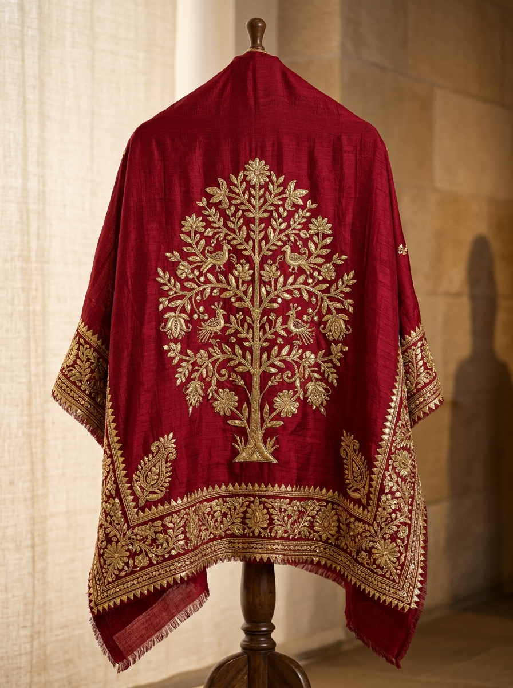
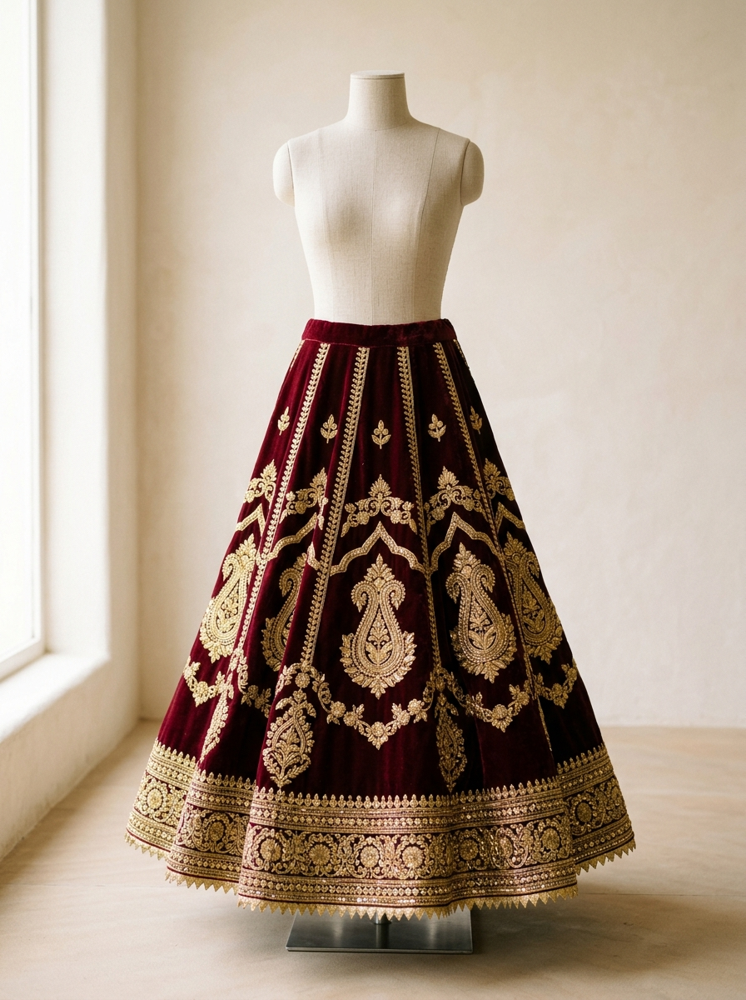
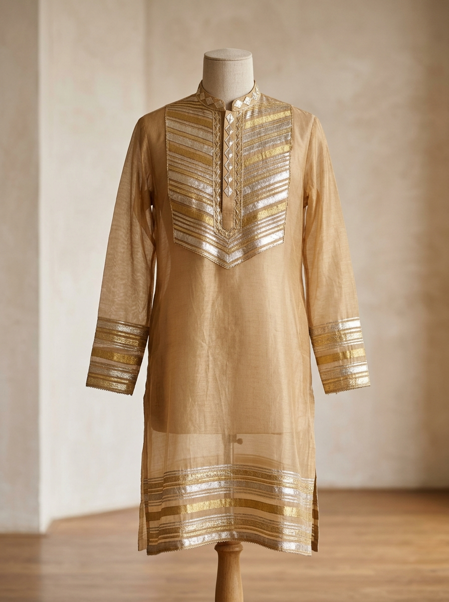
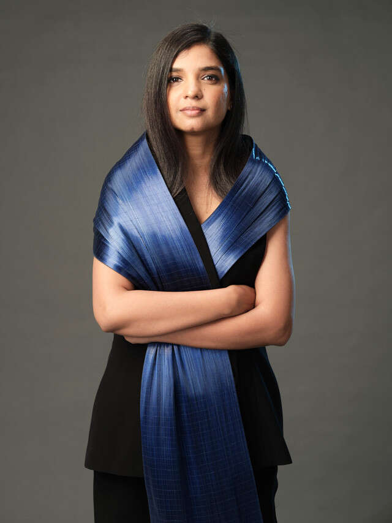
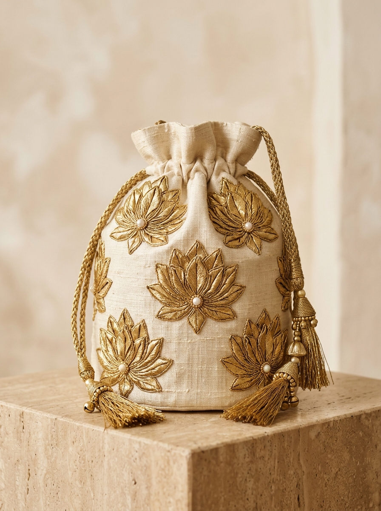

The Golden Discipline
Originating in the royal courts of Rajasthan, Gota Patti is the venerable craft of folding and hand-stitching genuine metallic ribbons into regal silhouettes.
Ribbons of Pure Zari
Each leaf (patti) is individually shaped, pinched, and hemmed with golden silk cords upon opulent crimson bandhani textiles.
The Ceremonial Drape
As the fabric unfurls, metallic facets capture ambient light, creating a shimmering optical illusion of cascading sunlight woven directly into silk.
An Enduring Legacy
Bridging four centuries of ancestral craftsmanship with modern global couture. Each piece remains an eternal heirloom.

GOTA PATTI
Threads of Gold. Stories of Craft.
The monumental Rajasthani discipline of beating, pleating, and tacking genuine metallic ribbons into floral cosmologies and timeless regal silhouettes.

Anatomy of an Embellishment
Gota Patti is a traditional Indian textile embellishment technique in which thin metallic ribbons (traditionally made from gold or silver-colored material) are cut, folded, and stitched onto fabric to create intricate decorative motifs.
Lappa vs. Gota
Lappa describes the wide, unembroidered flat woven metallic ribbon band used for architectural hem borders. In contrast, Gota is a narrower woven tape with metallic warp and cotton/silk weft, structured specifically to be folded, pinched, and faceted without cracking.
Kachhi vs. Pakki Gota
Kachhi Gota involves raw ribbon cutouts tacked with minimal blind stitches, leaving a softer, semi-flexible texture. Pakki Gota secures every ribbon petal edge under dense zardozi couching cords, fine coiled wire, and seed pearls for century-long heirloom permanence.
Origin & History: The Royal Tapestry
A living craft tradition documenting how beaten precious gold leaves moved from feudal Mewar armor linings to contemporary museum collections.
Pre-16th Century
Royal Courts & Ceremonies
Originated under the patronage of Mewar and Marwar maharanas. Real gold foil (kalabattu) wrapped around silk threads was reserved solely for coronation coats, temple flags, and ceremonial armor sheaths.
17th–18th Century
Festive & Bridal Traditions
Expansion into nuptial trousseaus. Imperial Rajput queens commissioned layered sheer Odhnis with heavy Gota pallus, and Nathdwara temple Pichhwais representing cosmic devotion through gilded floral emblems.
19th Century
Guild Specialization
Artisanal clans in Jaipur’s walled city and Shekhawati mercantile towns codified localized signatures: ultra-delicate Champa florets in Nayla and heavy relief Keri medallions in Bikaner.
Late 20th Century
Preservation Pressures
Industrial synthetic metallic films threatened the extinction of hand-beaten gold leaf ribbons. Master ustads documented authentic folds to maintain traditional needlecraft integrity.
21st Century
Contemporary Haute Couture
Radical renaissance. Haute couture ateliers translate Gota into quiet architectural geometry, unbleached handloom linens, and minimal luxury garments exhibited worldwide.
The 7 Disciplines of Creation
From ribbon metallurgy to the burnisher’s final stone stroke, each piece demands between 120 and 400 uninterrupted artisan hours.
Selecting the Gota
Grading ribbons for width (3mm to 40mm), weave tightness, and pure copper-gilt luster.
Precision Slicing
Master cutting (Katai) into diamond lozenges, teardrop petals, and exact 45-degree angle bevels.
Patti Folding
Tactile pinching (Tukdi) where each metallic petal is folded into a 3D parabolic ridge.
Shaping Motifs
Assembling solitary petals into intricate compound rosettes, peacock crests, and floral jaal trellises.
Chhapayi Stencil
Pouncing indigo and chalk through pin-pricked butter paper to guide exact motif placement on stretched fabric.
Hand Tankaayi
Tacking down edges with invisible silk stitches (Tankaayi) and framing them in coiled metallic wire (Gidha).
Burnishing
Polishing the work with smooth agate stone rollers and light steam to lock metallic reflection and flatten tension.
The 7 Canonical Motifs
Keri
The Royal Mango PaisleySignifying fertility, auspicious royal celebration, and abundance. Folded from curved concentric Gota strips with central zardozi seed stitching.
Phool
Floral Lotus & RoseMulti-tiered radiating rosettes representing divine purity. Constructed with 8, 16, or 32 individual diamond-cut Gota ribbons clustered around a gilded knot.
Pan
Sacred Betel LeafHeart-shaped leaf representing auspicious welcome and marital joy. Characterized by folded metallic center veins and fine pearl outlines.
Mor
Royal Monsoon PeacockThe supreme bird of Rajasthani lyric poetry. Crowned plumage composed of graduated Gota scallops and green-gilt thread under-couching.
Chidiya
Sparrow & Falcon FlightAbstracted winged creatures symbolizing freedom and desert morning skies, captured through angular folded geometric ribbon wings.
Geometric
Jali Trellis & ChevronLattice patterns echoing Rajasthani palace stone screens (Jharokhas). Woven Gota ribbons crossing at 60-degree mathematical diamonds.
Suraj
Sun Coronas & HaloSolar emblem of the Suryavanshi dynastic lineage. Concentric halos of finely spiked gold leaf ribbons reflecting brilliant desert daylight.
42 Additional Minor Butis
Explore our digitized database of regional sub-variants, including the rare Shekhawati camel-pack buti and Mewar hunting florets.
Tradition to Contemporary Architecture
Witnessing the transformation from ceremonial temple splendor to sculptural, deconstructed global luxury.
Ceremonial Grandeur & Pichhwai
Characterized by opulent weight, crimson and saffron silks, and dense surface coverage. Traditional pieces served as family heirloom reserves, laden with heavy silver ribbon, pearl clusters, and sacred devotional iconography.

Minimalist Geometry & Structure
Contemporary designers extract the ribbon fold as a modernist architectural motif. Applying whisper-weight metallic wire to sheer unbleached organza, deconstructed evening capes, structured sculptural potlis, and gallery wall tapestries.

Featured Curators & Labels
Three pioneering design houses redefining the dialogue between ancient Rajasthani needlecraft and global luxury minimalism.
Anavila Misra
Architectural Handwoven Linen
Reinterpreting Gota Patti as whisper-thin geometry on handwoven organic linen. Stripping away heavy ostentation to celebrate negative space and raw, tactile fiber textures.
Sanjay Garg (Raw Mango)
Raw Mango Atelier
Reviving traditional Chanderi and Varanasi weaves with bold, architectural Gota tessellations. Garg collaborates directly with rural Rajasthan clusters to resurrect forgotten antique motifs.

Material FuturistRimzim Dadu
Metallurgical Sculpting
Pioneering experimental metal wire cord sculpting that converges with classic Gota ribbing techniques. Transforming delicate ribbon pleating into structured couture armor.
Featured Masterworks
The Shekhawati Tree of Life Odhni
₹ 88,000Deep crimson handspun mulberry silk draped with symmetrical beaten-gold leaves, depicting ancient Rajasthani arboreal iconography.

Lotus Rosette Raw Silk Potli
₹ 16,500Hand-formed petals of brushed antique gold ribbon clustered around micro seed pearls, gathered by a gold zari tassel drawcord.
Chevron Lappa Chanderi Kurta
₹ 34,000Woven on centuries-old pit looms in Chanderi, embedded with diagonal antique ribbon insets producing rhythmic light play.
“More than embellishment. It is a story stitched by hand.”
In the courtyards of Nayla and the ancient havelis of Jaipur, generations of women sit beside low wooden tables (khatiyas). With scissors small enough to rest on a fingertip and ribbons of pure beaten metal, they stitch sacred patience into silk—preserving an uninterrupted 400-year devotion to Rajasthani beauty.